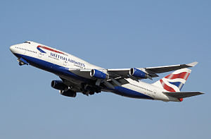
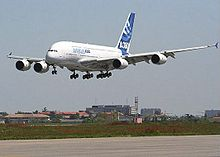

Un avión, también denominado aeroplano, es un aerodino de ala fija, o aeronave con mayor densidad que el aire, dotado de alas y un espacio de carga capaz de volar, impulsado por ninguno, uno o más motores. Los aeroplanos incluyen a los monoplanos, biplanos y triplanos. Los aeroplanos sin motor se han mantenido desde los inicios de la aviación para aviación deportiva y en la segunda guerra mundial para transporte de tropas, se denominan planeadores o veleros..
El avión de pasajeros con mayor capacidad de transporte de viajeros es el Airbus A380, avión que puede llegar a transportar alrededor de 800 personas, en vez de las aproximadamente 500 que lleva un 747. El Boeing 747 fue presentado por primera vez en el año 1969.
